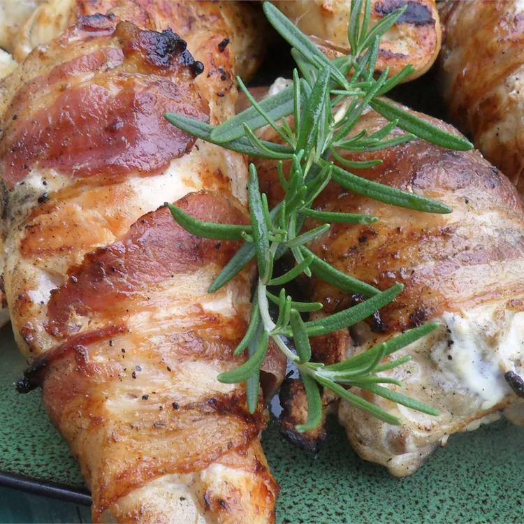

Grilled Chicken with Rosemary and Bacon

 Grilled chicken breasts with bacon, garlic powder, and rosemary.
Grilled chicken breasts with bacon, garlic powder, and rosemary.
Ingredients
- 4 teaspoons garlic powder
- 4 skinless, boneless chicken breast halves
- salt and pepper to taste
- 4 sprigs of rosemary
- 4 slices of bacon
Directions
- Preheat an outdoor grill for medium-high heat, and lightly oil the grate.
- Sprinkle 1 teaspoon garlic powder on each chicken breast and season with salt and pepper. Lay one rosemary sprig on each chicken breast. Wrap bacon around the chicken to hold the rosemary on. Secure bacon with a toothpick or an additional thick rosemary stem.
- Cook chicken breasts until no longer pink in the center and the juices run clear, about 8 minutes per side. An instant-read thermometer inserted into the center should read at least 165 degrees F (74 degrees C). Stay near the grill to combat any flare-ups from the bacon. Remove the toothpicks before serving.